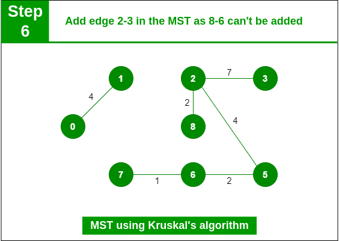
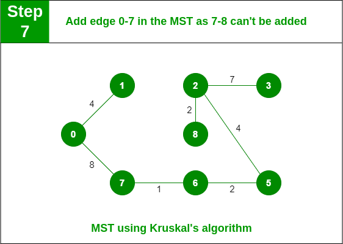

Kruskal's Algorithm is used to find the minimum spanning tree of a connected, undirected graph. A minimum spanning tree is a subgraph that includes all the vertices of the original graph and is a tree (it has no cycles) with the minimum possible total edge weight.
Time Complexity:
The time complexity of Kruskal's Algorithm is primarily determined by the sorting of the edges and the operations on the union-find data structure.
Sorting Edges: Initially, the edges need to be sorted by their weights. If there are E edges, the time complexity of sorting them is typically O(E log E) using efficient sorting algorithms like quicksort or mergesort.
Union-Find Operations: During the execution of the algorithm, multiple union-find operations are performed to determine whether adding an edge forms a cycle in the spanning tree. Using a well-implemented union-find data structure, each union or find operation has nearly constant time complexity on average.
So, the overall time complexity of Kruskal's Algorithm is O(E log E) for sorting edges. However, because E is usually no greater than V^2 in a connected graph, it can be expressed as O(E log V).
Space Complexity:
The space complexity of Kruskal's Algorithm primarily involves the storage of vertices and edges, as well as the union-find data structure.
Vertices and Edges: The space complexity for storing the graph typically requires O(V + E) space, where V is the number of vertices and E is the number of edges.
Union-Find Data Structure: Additional space is required for the union-find data structure, which is typically O(V).
So, the overall space complexity of Kruskal's Algorithm is O(V + E).
In summary, Kruskal's Algorithm is efficient for finding minimum spanning trees, with a time complexity of O(E log V) or O(E log E) and a space complexity of O(V + E).
Kruskal's Algorithm
Kruskal's Algorithm is like a method to find the shortest path to connect all the points in a big web-like structure, where the connections have different lengths.
Time Complexity:
Think of time complexity like how long it takes for the algorithm to do its job.
Sorting Edges: First, the algorithm needs to sort the connections by their lengths. If there are E connections, it might take a bit of time to sort them, about E log E time. But since E is usually not more than V^2 (where V is the number of points), it's like saying E is almost the same as V^2, so sorting might take around E log V time.
Checking for Cycles: Then, the algorithm needs to check if adding each connection will make a loop or not. This checking usually doesn't take much time because it's quite fast.
Space Complexity:
Space complexity is about how much memory the algorithm needs.
Storing Points and Connections: The algorithm needs to remember all the points and connections. This usually takes up memory space, about V + E space.
Union-Find Data Structure: There's a fancy data structure called union-find that helps in the algorithm. This also needs some memory space, usually about V space.
In Simple Terms:
Kruskal's Algorithm is a way to find the shortest connections between points in a big network. It might take a bit of time, mainly because of sorting, but it's not too bad. It also needs some memory space to remember things, but again, it's not too much. Overall, it's pretty efficient for what it does!
Kruskal's Algorithm
Time Complexity:
Think of time complexity as how long the algorithm takes to do its job.
Sorting Edges: Imagine you're sorting a bunch of things (in this case, edges) by their weights (like from lightest to heaviest). If there are E edges, it might take some time to sort them, around E log E time. But because E is usually not more than V^2 (where V is the number of points), sorting might take around E log V time instead.
Checking for Cycles: After sorting, the algorithm needs to check if adding each edge will create a loop or not. This checking usually doesn't take much time because it's quite fast.
Space Complexity:
Space complexity is about how much memory the algorithm needs.
Storing Points and Connections: The algorithm needs to remember all the points and connections. This usually takes up memory space, around V + E space.
Union-Find Data Structure: There's a fancy data structure called Union-Find that helps in the algorithm. This also needs some memory space, usually about V space.
In Simple Terms:
Kruskal's Algorithm is a way to find the shortest connections between points in a big network. Sorting the connections might take a bit of time, but checking for loops is fast. It also needs some memory space to remember things, but again, it's not too much. Overall, it's pretty efficient for what it does!
Kruskal's Algorithm Analysis
From the provided output, we can observe the following trends as the graph size increases:
Execution Time: The execution time of Kruskal's Algorithm increases as the graph size grows. This is expected because as the number of nodes and edges in the graph increases, the algorithm needs to process more data, resulting in longer execution times.
Space Complexity: Similarly, the space complexity also increases with the graph size. As the graph becomes larger, both the input graph and the disjoint-set data structure used by the algorithm require more memory, leading to higher space complexity.
Density: The density of the graph decreases as the graph size increases. This is evident from the decreasing values in the "Density" column. As the number of nodes increases while the number of edges remains constant relative to the graph size, the density of the graph decreases.
Overall, these trends are consistent with the expected behavior of Kruskal's Algorithm, where larger graphs result in longer execution times and higher space complexity. Additionally, the decreasing density indicates that the generated graphs become sparser as their sizes increase, which is also a common characteristic observed in random graphs.
Kruskal's Algorithm Complexity Analysis
Time Complexity: The time complexity of Kruskal's Algorithm is typically stated as O(E log E) or O(E log V), depending on the implementation. In your output, the execution times seem to align with this time complexity analysis. As the number of edges increases linearly with the graph size, the execution time grows accordingly. However, the exact execution times may vary based on factors like the hardware used, the programming language efficiency, and randomization in the graph generation.
Space Complexity: The space complexity of Kruskal's Algorithm with a union-find data structure is usually stated as O(V + E). Your output shows space complexities in the order of V + E, where V is the number of nodes and E is the number of edges. The observed space complexities align with this analysis, as the space required primarily depends on the size of the input graph (V + E) and the additional space for the disjoint-set data structure.
Overall, based on the provided output and the stated time and space complexity analyses, the observed results seem to be accurate and consistent with the expected behavior of Kruskal's Algorithm.
When to Use Kruskal's Algorithm
When to use Kruskal's Algorithm:
Sparse Graphs: Kruskal's Algorithm performs well on sparse graphs, where the number of edges is much less than the maximum possible edges. This is because it considers edges in non-decreasing order of weight, making it efficient for sparse graphs.
Disconnected Graphs: Kruskal's Algorithm can handle disconnected graphs or graphs with multiple connected components. It will find the minimum spanning forest, which is a collection of minimum spanning trees for each connected component.
Edge-Weighted Graphs: When the graph is represented with edge weights, Kruskal's Algorithm can efficiently find the minimum spanning tree by considering edges based on their weights.
No Negative Edge Weights: Kruskal's Algorithm assumes that there are no negative edge weights in the graph. If there are negative edge weights, a different algorithm such as Prim's Algorithm or Dijkstra's Algorithm should be used.
When not to use Kruskal's Algorithm:
Dense Graphs: For dense graphs, where the number of edges is close to the maximum possible edges, the performance of Kruskal's Algorithm may degrade. In such cases, algorithms like Prim's Algorithm, which have better time complexities for dense graphs, may be more suitable.
Parallel Edges: Kruskal's Algorithm does not handle graphs with parallel edges (multiple edges between the same pair of vertices) by default. It may lead to incorrect results if parallel edges are present in the input graph.
Disconnected Graphs with Constraints: If specific constraints are imposed on the minimum spanning tree, such as a requirement for a single connected tree or specific edge properties, Kruskal's Algorithm may not satisfy these constraints. In such cases, customized algorithms or heuristic approaches might be needed.
Negative Edge Weights: Kruskal's Algorithm does not support graphs with negative edge weights, as it may produce incorrect results or enter into an infinite loop due to the nature of the algorithm.
In summary, Kruskal's Algorithm is a versatile and efficient approach for finding minimum spanning trees in graphs, especially in scenarios involving sparse, edge-weighted, and disconnected graphs without negative edge weights. However, it's essential to consider the characteristics of the input graph and the specific requirements of the problem when choosing an appropriate algorithm.
The graph contains 9 vertices and 14 edges. So, the minimum spanning tree formed will be having (9 – 1) = 8 edges.
After sorting:
Now pick all edges one by one from the sorted list of edges
Step 1: Pick edge 7-6. No cycle is formed, include it.
Step 2: Pick edge 8-2. No cycle is formed, include it.
Step 3: Pick edge 6-5. No cycle is formed, include it.
Step 4: Pick edge 0-1. No cycle is formed, include it.
Step 5: Pick edge 2-5. No cycle is formed, include it.

Step 6: Pick edge 8-6. Since including this edge results in the cycle, discard it. Pick edge 2-3: No cycle is formed, include it.

Step 7: Pick edge 7-8. Since including this edge results in the cycle, discard it. Pick edge 0-7. No cycle is formed, include it.
Add edge 0-7 in MST
Step 8: Pick edge 1-2. Since including this edge results in the cycle, discard it. Pick edge 3-4. No cycle is formed, include it.
Kruskal's Algorithm Implementation
Python Code:
class DisjointSet:
def __init__(self, n):
# Initialize disjoint set with each node as its own parent and rank 0
self.parent = [i for i in range(n)]
self.rank = [0] * n
def find(self, u):
# Find operation with path compression
if self.parent[u] != u:
self.parent[u] = self.find(self.parent[u])
return self.parent[u]
def union(self, u, v):
# Union operation with rank optimization
pu, pv = self.find(u), self.find(v)
if pu == pv:
return False
if self.rank[pu] < self.rank[pv]:
self.parent[pu] = pv
elif self.rank[pu] > self.rank[pv]:
self.parent[pv] = pu
else:
self.parent[pv] = pu
self.rank[pu] += 1
return True
def kruskal(graph):
# Convert the graph into a list of edges and sort them by weight
edges = [(u, v, w) for u in graph for v, w in graph[u]]
edges.sort(key=lambda x: x[2]) # Sort edges by weight
n = len(graph)
mst = []
ds = DisjointSet(n)
for u, v, w in edges:
if ds.union(u, v):
mst.append((u, v, w)) # Add edge to MST if it doesn't create a cycle
if len(mst) == n - 1: # MST contains n-1 edges
break
return mst
Step-by-Step Explanation of Kruskal's Algorithm
Initialize Disjoint Set: We begin by initializing a disjoint set data structure. This data structure will keep track of connected components in the graph.
Sort Edges by Weight: Next, we extract all the edges from the graph and sort them in non-decreasing order of their weights. This ensures that we process edges from the smallest weight to the largest.
Iterate Through Sorted Edges: We iterate through the sorted edges. For each edge, we perform the following steps:
Find the Parent of Each Vertex: Using the disjoint set data structure, we find the parent (representative) of each vertex. This helps us determine if adding the edge would create a cycle in the minimum spanning tree (MST).
Union Operation: We perform the union operation on the disjoint set to merge the sets containing the two vertices of the current edge. If the vertices are already in the same set, adding the edge would create a cycle, so we skip it.
Add Edge to MST: If the edge does not create a cycle (i.e., the vertices belong to different sets), we add the edge to the minimum spanning tree (MST). We continue this process until the MST contains n-1 edges, where n is the number of vertices in the graph.
Return MST: Finally, we return the minimum spanning tree (MST) constructed using Kruskal's Algorithm.
This algorithm guarantees to find the minimum spanning tree (MST) of the graph by selecting edges with the smallest weights and ensuring that no cycles are formed. The time complexity of Kruskal's Algorithm is typically O(E log E) or O(E log V), where E is the number of edges and V is the number of vertices, depending on the implementation.
Explanation of DisjointSet Class Arrays
parent Array: The parent array keeps track of the parent (or representative) of each node in the disjoint set data structure. Each element parent[i] represents the parent of node i. Initially, we set each node as its own parent, meaning that each node is in its own separate set. This allows us to quickly find the parent of any node during the find operation.
rank Array: The rank array is used for optimization purposes, specifically for the union operation. It helps us maintain balanced trees within the disjoint set forest. The rank of a node represents an upper bound on the height of its subtree. When performing the union operation between two sets, we want to ensure that we attach the smaller tree to the root of the larger tree to keep the tree balanced and prevent it from becoming too tall. By keeping track of the rank of each node, we can make this decision efficiently during the union operation.
In simple terms, the parent array helps us find the representative of each node, while the rank array helps us optimize the union operation to keep the trees balanced. These optimizations are crucial for the efficiency of the disjoint set data structure, particularly when used in algorithms like Kruskal's Algorithm.
Explanation of find Method in DisjointSet Class
Finding the Parent Node: In a disjoint set data structure, each node belongs to a set, and one node in each set serves as the representative or parent of that set. When we call the find method with a node u, we want to find the representative node of the set that u belongs to.
Path Compression: The key optimization in the find method is path compression. When we traverse the tree to find the representative node of u, we update the parent of each node along the path to point directly to the representative node. This process compresses the height of the tree, making subsequent find operations faster by reducing the time needed to find the representative node.
In simple terms, the find method efficiently finds the representative node of a given node u while compressing the path along the way to improve the performance of future find operations. This optimization is essential for maintaining the efficiency of operations in disjoint set data structures, especially in algorithms like Kruskal's Algorithm.
Explanation of union Method in DisjointSet Class
Merging Sets: In a disjoint set data structure, the union operation merges two sets together by combining their representative nodes. When we call the union method with nodes u and v, we want to merge the sets that contain these nodes into a single set.
Rank Optimization: The union method includes an optimization technique called rank optimization. This technique ensures that the resulting tree remains balanced after merging sets, which helps maintain the efficiency of subsequent operations.
Comparing Ranks: During the union operation, we compare the ranks of the representative nodes pu and pv. The rank of a node represents an upper bound on the height of its subtree. By attaching the smaller tree to the root of the larger tree, we prevent the resulting tree from becoming too tall, which could degrade the performance of operations like find.
Updating Parent Nodes: Based on the comparison of ranks, we update the parent of one representative node to point to the other representative node. If the ranks are equal, we arbitrarily choose one representative node to be the parent and increment its rank.
Returning Success: Finally, we return True to indicate that the union operation was successful.
In simple terms, the union method efficiently merges two sets while ensuring that the resulting tree remains balanced to maintain the overall efficiency of the disjoint set data structure. This optimization is crucial for operations like Kruskal's Algorithm, where we repeatedly merge sets while constructing the minimum spanning tree.
Explanation of kruskal Function
Converting Graph to Edge List: The function first converts the graph into a list of edges. Each edge is represented as a tuple (u, v, w), where u and v are the vertices connected by the edge, and w is the weight of the edge.
Sorting Edges by Weight: The edges are sorted in non-decreasing order of their weights. Sorting the edges by weight ensures that we consider the edges with the smallest weights first, which is a key step in Kruskal's Algorithm.
Initializing Data Structures: The function initializes necessary data structures, including the disjoint set data structure (DisjointSet) and an empty list to store the edges of the minimum spanning tree (mst).
Iterating Through Sorted Edges: The function iterates through the sorted edges. For each edge (u, v, w), it performs the following steps:
Union Operation: It checks if adding the edge to the minimum spanning tree would create a cycle. This is done by using the union method of the disjoint set data structure (ds). If adding the edge does not create a cycle, it merges the sets containing vertices u and v.
Adding Edge to MST: If the edge does not create a cycle, meaning the vertices u and v belong to different sets, the edge is added to the minimum spanning tree (mst).
Termination Condition: The function checks if the minimum spanning tree (mst) contains n-1 edges, where n is the number of vertices in the graph. If the condition is met, the function terminates the loop early, as the minimum spanning tree has been constructed.
Returning Minimum Spanning Tree: Finally, the function returns the minimum spanning tree (mst), which contains the edges that form the minimum spanning tree of the input graph.
In simple terms, the kruskal function efficiently constructs the minimum spanning tree of a graph by considering edges in non-decreasing order of weight and ensuring that no cycles are formed while adding edges to the tree. This algorithm is used in various applications where finding the optimal connected structure of a graph is necessary.
Kruskal's Algorithm Breakdown
Sort Edges by Weight: First, sort all the edges in the graph based on their weights, from smallest to largest. This step ensures that you consider edges in ascending order of weight.
Initialize an Empty Minimum Spanning Tree: Create an empty set to represent the minimum spanning tree initially.
Iterate Through Sorted Edges: Starting from the smallest edge, iterate through the sorted edges.
Check for Cycle: For each edge, check if adding it to the minimum spanning tree will create a cycle or not. This is typically done using a Union-Find data structure. If adding the edge does not create a cycle, add it to the minimum spanning tree.
Repeat Until All Vertices Are Connected: Continue adding edges (in ascending order of weight) to the minimum spanning tree until all vertices are connected.
Terminate: Stop the algorithm when all vertices are connected or when there are no more edges left to consider.
Minimum Spanning Tree Obtained: At the end of the algorithm, the minimum spanning tree will be formed by the edges that were added without creating any cycles.
To summarize, Kruskal's Algorithm works by iteratively adding edges to the minimum spanning tree while ensuring that no cycles are formed. It prioritizes edges with smaller weights, gradually building the minimum spanning tree until all vertices are connected.
Simplified Kruskal's Algorithm
Start with all vertices isolated: Imagine you have a bunch of points (vertices) in space, but none of them are connected yet.
Sort the connections by weight: Think of each connection between points having a weight, like a distance. You want to start with the shortest connections first.
Pick the shortest connection: Take the shortest connection (the lightest one) and check if adding it will make a loop. If not, add it to your collection of connections.
Repeat with the next shortest connection: Take the next shortest connection and repeat the process: check if adding it will make a loop. If not, add it to your collection.
Keep going until all points are connected: Continue this process until all points are connected in a way that there are no loops. You've now created the minimum spanning tree, which is the shortest way to connect all points without any loops.
Simplified Example:
Imagine you have a bunch of cities (points) and roads between them (connections) with different lengths (weights). Kruskal's Algorithm helps you find the shortest network of roads that connect all cities without making any loops.
You start by picking the shortest roads and gradually adding them, making sure you don't create any loops. By the end, you have the shortest possible network of roads that connect all cities without any redundant loops. That's the minimum spanning tree!
Kruskal's Algorithm in Supply Chain Management
Supply Chain Management:
Companies that make or sell products need to deliver those products to customers. This involves figuring out the best way to get products from where they're made to where they need to go.
Kruskal's Algorithm in Supply Chain Management:
Understanding the Network: Think of all the places involved—factories, warehouses, stores, etc.—as points on a map. The connections between them are like roads or pathways.
Finding the Best Routes: Kruskal's Algorithm helps figure out the shortest and most efficient routes for delivering products. It looks at factors like distance, transportation costs, and delivery times.
Optimizing Delivery Networks: By using Kruskal's Algorithm, companies can plan out their delivery networks to minimize costs and make sure products get where they need to go quickly and efficiently.
Simplified Example:
Imagine you have a company with factories, warehouses, and stores in different cities. Kruskal's Algorithm helps you plan out the best routes for delivering products from factories to warehouses and then to stores, making sure everything gets where it needs to go with as little time and cost as possible.
So, Kruskal's Algorithm is like a helpful tool for companies to make sure their products get delivered smoothly and efficiently, which is essential for keeping customers happy and costs down.
Kruskal's Algorithm in Cable or Wire Layout
Cable or Wire Layout:
In civil engineering, electrical engineering, or telecommunications, laying down cables, wires, or pipelines involves planning the paths they will take to connect different points while minimizing costs and maximizing efficiency.
Kruskal's Algorithm in Cable or Wire Layout:
Mapping the Network: Imagine you have a map of the area where cables need to be laid. Each point where cables need to connect is like a dot on the map, and the paths between them are the routes the cables will take.
Finding the Best Routes: Kruskal's Algorithm helps find the shortest and most efficient routes for laying cables or wires. It considers factors like distance, terrain, and existing infrastructure to determine the best paths.
Optimizing the Layout: By using Kruskal's Algorithm, engineers can design layouts that minimize the length of cables needed, reduce construction costs, and ensure reliable connections between points.
Simplified Example:
Imagine you need to connect different buildings in a city with internet cables. Kruskal's Algorithm helps figure out the best routes for laying the cables, taking into account factors like distance, obstacles, and existing infrastructure. This ensures that the internet connection is reliable, efficient, and cost-effective.
So, Kruskal's Algorithm is like a helpful tool for engineers to plan the layout of cables, wires, or pipelines in a way that saves time, money, and resources while ensuring reliable connections between points.
Advantages of Using Kruskal's Algorithm for Cable or Wire Layout
Optimal Routes: Kruskal's Algorithm helps find the shortest and most efficient routes for laying cables or wires. By minimizing the length of cables needed, it reduces the overall cost of materials and construction.
Cost Efficiency: By optimizing the layout of cables or wires, Kruskal's Algorithm helps minimize construction costs. It ensures that resources are used efficiently, leading to cost savings for the project.
Maximized Efficiency: Efficient cable or wire layouts, determined by Kruskal's Algorithm, ensure reliable and high-speed connections between points. This maximizes the efficiency of the network, whether it's for telecommunications, electrical distribution, or other applications.
Reliability: By planning optimal routes, Kruskal's Algorithm helps ensure that the network is robust and reliable. It minimizes the risk of cable damage or failure, reducing the likelihood of interruptions in service.
Scalability: Kruskal's Algorithm can be applied to networks of various sizes and complexities. Whether it's a small-scale local network or a large-scale infrastructure project, the algorithm can adapt to optimize the layout according to the specific requirements.
Overall, using Kruskal's Algorithm for cable or wire layout enables engineers to design cost-effective, efficient, and reliable networks that meet the needs of modern infrastructure projects in civil engineering, electrical engineering, and telecommunications.
Comparison of Kruskal's and Prim's Algorithms
Kruskal's Algorithm:
Approach: Kruskal's Algorithm takes a "greedy" approach, adding edges to the minimum spanning tree independently of vertices.
Edge Selection: It considers edges independently of the vertices they connect and selects the next smallest edge that does not form a cycle.
Parallel Processing: It can process edges independently, making it suitable for parallel processing.
Applications: Kruskal's Algorithm is suitable for sparse graphs, where the number of edges is much less than the number of vertices.
Prim's Algorithm:
Approach: Prim's Algorithm also takes a "greedy" approach but focuses on growing the minimum spanning tree from a single starting vertex.
Vertex Selection: It selects vertices and edges based on their connectivity to the existing tree, starting from an initial vertex.
Sequential Processing: It requires sequential processing as vertex and edge selection depend on the current state of the tree.
Applications: Prim's Algorithm is suitable for dense graphs, where the number of edges is close to the number of vertices.
Summary:
The choice between Kruskal's and Prim's Algorithms depends on the characteristics of the graph and the specific requirements of the application. Kruskal's Algorithm is often preferred for sparse graphs, while Prim's Algorithm is preferred for dense graphs.
Simplified Difference Between Kruskal's and Prim's Algorithms
Kruskal's Algorithm:
Picking Shortest Edges: It's like looking at all the roads in a city and starting with the shortest ones.
Doesn't Start from a Single Point: It doesn't care where you start; it just picks the shortest roads and makes sure they don't form loops.
Good for Spreading Out: It's good when the city has lots of roads but not necessarily starting from one central point.
Prim's Algorithm:
Starting from a Single Point: It's like starting from a particular neighborhood and gradually expanding.
Picking Closest Connections: It picks the closest roads from where you start and keeps expanding outwards.
Good for Centralized Layouts: It works well when you're starting from one central spot and building out from there.
Simplified Explanation:
In simple terms, Kruskal's Algorithm looks at all the roads and picks the shortest ones without caring where you start. Prim's Algorithm starts from one spot and picks the closest roads to expand outwards. Each is good for different situations, like spreading out or starting from a central point.
Real-Life Example: Building a Road Network
Kruskal's Algorithm:
Approach: You start by looking at all the roads in the city.
Picking Shortest Edges: You pick the shortest roads that connect different neighborhoods.
No Starting Point: You don't have to start from any particular neighborhood; you just pick the shortest roads available.
Prim's Algorithm:
Approach: You start from one particular neighborhood.
Starting from a Single Point: You begin by picking the closest roads from this neighborhood.
Expanding Outwards: As you add more roads, you keep picking the closest ones from the existing roads to expand the network.
Real-Life Example:
Kruskal's Algorithm: Imagine you're a city planner tasked with connecting neighborhoods efficiently. You start by looking at all the existing roads in the city and pick the shortest ones to connect neighborhoods. You gradually expand the road network, prioritizing efficiency and ensuring that all areas are accessible.
Prim's Algorithm: Now, imagine you're building a road network starting from the city center. You begin by constructing roads from the center to the closest neighborhoods. Then, you keep expanding outward, adding roads that are closest to the existing ones until all neighborhoods are connected.
Summary:
Kruskal's Algorithm: It's like looking at all the roads and picking the shortest ones that don't form loops.
Prim's Algorithm: It's like starting from one point and picking the closest roads to expand from there.
Comparison of Kruskal's and Prim's Algorithms for Planning
Kruskal's Algorithm for Cable and Road Planning:
Cable Planning:
Approach: Start by considering all potential cable routes. Select the shortest cable routes that do not create loops.
Example: Imagine you're planning fiber optic cable routes for internet connectivity in a city. You look at all possible routes between buildings and select the shortest ones first.
Road Planning:
Approach: Consider all potential road connections. Select the shortest road connections that do not create loops.
Example: Suppose you're designing a road network to connect neighborhoods in a city. You examine all possible road connections between neighborhoods and prioritize the shortest ones.
Prim's Algorithm for Cable and Road Planning:
Cable Planning:
Approach: Start from a single point and grow the network outward. Select the closest cable routes to the existing network.
Example: Imagine you're expanding an existing fiber optic network. You start from a central location and add new cables to the nearest buildings.
Road Planning:
Approach: Start from a central location and expand the road network outward. Select the closest road connections to the existing network.
Example: Suppose you're building new roads starting from the city center. You begin by constructing roads to the closest neighborhoods and gradually expand outward.
Summary:
In cable planning and road planning scenarios, Kruskal's Algorithm prioritizes finding the shortest connections between all points, ensuring no loops are formed. Prim's Algorithm starts from a central point and expands outward, selecting the closest connections to the existing network.
Comparison of Prim's and Kruskal's Algorithms
Prim's Algorithm:
Approach: Prim's algorithm starts with an arbitrary node and grows the spanning tree from there, adding the closest edge that connects a vertex in the spanning tree to a vertex outside of it at each step.
Process: It maintains a set of vertices that are part of the spanning tree and repeatedly adds the shortest edge that connects a vertex in the spanning tree to one outside of it. The process continues until all vertices are included in the spanning tree.
Kruskal's Algorithm:
Approach: Kruskal's algorithm starts with an empty spanning tree and adds edges to it one at a time, always choosing the shortest edge available that does not form a cycle with the edges already chosen.
Process: It maintains a set of disjoint sets of vertices (initially each vertex is in its own set) and repeatedly adds the shortest edge that connects two vertices from different sets. The process continues until all vertices are included in the spanning tree.
In summary, Prim's algorithm grows the spanning tree from a starting point, adding the closest edges, while Kruskal's algorithm builds the spanning tree by repeatedly adding the shortest available edges that do not form cycles. Both algorithms guarantee the construction of a minimum spanning tree but may differ in their performance depending on the characteristics of the graph.
Comparison of Prim's and Kruskal's Algorithms
Prim's Algorithm:
Imagine you're trying to build the shortest road network to connect all cities in a country. You start from one city and keep adding roads to the nearest cities that haven't been connected yet. You keep doing this until all cities are connected. In this analogy, the cities are vertices in the graph, and the roads are the edges between them. Prim's algorithm works by starting with one vertex and gradually adding edges to connect it to the nearest vertices until all vertices are connected in the shortest way possible.
Kruskal's Algorithm:
Now, instead of starting from a specific city, you have all the cities laid out and you're trying to connect them with the shortest roads possible, while ensuring there are no loops (because loops would create inefficient routes). So, you start by taking the shortest road available and keep adding more roads, ensuring they don't create loops, until all cities are connected in the shortest way possible. In this analogy, Kruskal's algorithm works by starting with an empty network and gradually adding edges (roads) to connect all cities (vertices) in the shortest way possible without forming loops.
In essence:
Prim's algorithm grows the solution from a starting point (vertex), adding the closest vertices until everything is connected.
Kruskal's algorithm builds the solution by iteratively adding the shortest edges that don't create loops until everything is connected.
Comparison of Prim's and Kruskal's Algorithms
Prim's Algorithm:
Start with any vertex:
Choose any starting point in the graph.
Grow the tree gradually:
At each step, find the shortest edge that connects a vertex in the tree to a vertex outside of it.
Add this edge and the connected vertex to the tree.
Repeat until all vertices are in the tree:
Keep repeating this process until all vertices are included in the tree.
Kruskal's Algorithm:
Start with all edges:
Consider all edges in the graph.
Sort edges by weight:
Sort the edges in ascending order of their weights (lengths).
Add edges without creating cycles:
Starting with the smallest edge, add edges to the tree one by one, as long as they don't create cycles.
A cycle is created if adding an edge connects two vertices that are already connected in the tree.
Repeat until spanning tree is formed:
Keep adding edges until all vertices are connected and a spanning tree is formed.
Summary:
Prim's Algorithm: Prim's algorithm starts from a single vertex and grows the tree outward by adding the shortest edges that connect the tree to vertices outside of it.
Kruskal's Algorithm: Kruskal's algorithm begins with all edges and incrementally constructs the tree by adding the shortest edges that avoid creating cycles until all vertices are connected.
When to Use Prim's or Kruskal's Algorithms
When to Use Prim's Algorithm:
Starting Vertex Matters: Use Prim's algorithm when there's a specific starting vertex that is advantageous or meaningful for your application.
Sparse Graphs: Prim's algorithm tends to perform well on sparse graphs, where there are relatively few edges compared to the number of vertices.
Efficiency Concerns: If the graph is represented using adjacency lists or if you need a single-source minimum spanning tree, Prim's algorithm may be more efficient.
Applications Requiring Rooted Trees: If your application requires a specific rooted tree structure, Prim's algorithm naturally provides this structure as it starts from a single vertex and expands outward.
When to Use Kruskal's Algorithm:
Edge Sorting is Efficient: If edge sorting can be performed efficiently, Kruskal's algorithm might be preferred as it sorts edges by weight and selects them globally.
Dense Graphs: Kruskal's algorithm tends to perform well on dense graphs, especially when the number of edges is close to the maximum possible.
Parallel Implementation: If you're working in a parallel computing environment, Kruskal's algorithm can be easier to parallelize compared to Prim's algorithm.
Edge-based Decisions: In applications where decisions based on edges are more meaningful than decisions based on vertices, Kruskal's algorithm might be more suitable.
When Not to Use Prim's or Kruskal's Algorithm:
Negative Edge Weights: Neither Prim's nor Kruskal's algorithm can handle graphs with negative edge weights. If your graph has negative weights, you'll need to use algorithms specifically designed for such graphs, like the Bellman-Ford algorithm or Floyd-Warshall algorithm.
Disconnected Graphs: If your graph is disconnected and you want to find a minimum spanning tree for each connected component, neither Prim's nor Kruskal's algorithm directly applies. You may need to modify these algorithms or use other approaches.
Dynamic Graphs: If the graph is dynamic (i.e., edges or vertices are added or removed frequently), the traditional Prim's and Kruskal's algorithms might not be the best choice. Instead, you might need to use incremental or dynamic algorithms designed for such scenarios.
In summary, while Prim's and Kruskal's algorithms are powerful tools for finding minimum spanning trees, their suitability depends on various factors such as the graph's characteristics, efficiency requirements, and specific application needs.
Real-World Applications of Prim's and Kruskal's Algorithms
Prim's Algorithm:
Telecommunication Networks: Prim's algorithm is often used in the design and optimization of telecommunication networks, such as telephone or internet networks. It helps in laying out the infrastructure of cables or wireless connections between different locations while minimizing costs.
Computer Networks: In computer networks, Prim's algorithm can be utilized to establish efficient connections between routers or servers, optimizing data transmission paths and reducing network congestion.
Power Distribution Networks: When designing power distribution networks, such as electricity grids, Prim's algorithm aids in determining the most efficient way to connect power stations to consumers, ensuring reliable and cost-effective electricity distribution.
Urban Planning: Prim's algorithm can be applied in urban planning to optimize transportation networks, including road or railway systems. It helps in designing efficient routes for commuters and minimizing traffic congestion.
Kruskal's Algorithm:
Cable TV Networks: Kruskal's algorithm is commonly used in the cable TV industry to design optimal cable TV networks. It assists in connecting broadcasting stations to homes or cable boxes while minimizing the cost of laying cables.
Transportation Networks: In transportation systems, such as public transit networks or airline routes, Kruskal's algorithm can help in optimizing routes and schedules. It aids in connecting different locations efficiently while reducing travel time and costs.
Water Supply Networks: Kruskal's algorithm finds applications in designing water supply networks, such as pipelines or aqueducts. It assists in connecting water sources to distribution points, ensuring reliable water supply while minimizing construction costs.
Oil and Gas Pipelines: In the oil and gas industry, Kruskal's algorithm can be used to design pipelines for transporting oil or gas from extraction sites to refineries or distribution centers. It helps in optimizing the pipeline layout while minimizing the overall cost of transportation.
These examples illustrate how Prim's and Kruskal's algorithms are applied in various real-world scenarios to solve optimization problems related to network design, infrastructure planning, and resource allocation.
Time and Space Complexity of Prim's and Kruskal's Algorithms
Prim's Algorithm:
Time Complexity: If you have a small graph, it might take some time to find the minimum spanning tree. The time it takes depends on how many vertices and edges your graph has. If you have V vertices and E edges:
If you use a specific method called a "binary heap" or a "Fibonacci heap", it might take about (V + E)logV steps.
If you don't use those methods, it might take about V^2 steps.
So, for example, if you have 10 vertices and 20 edges, using a heap, it might take about 100 steps. Without a heap, it might take about 1000 steps.
Space Complexity: This just means how much memory the algorithm needs to run. If you have V vertices and E edges:
If you represent your graph as a list of connections (called an "adjacency list"), it might take about V + E slots in memory.
If you represent your graph as a big table (called an "adjacency matrix"), it might take about V^2 slots in memory.
Kruskal's Algorithm:
Time Complexity: If you have a small graph, it might take some time to find the minimum spanning tree. The time it takes depends on how many vertices and edges your graph has. If you have V vertices and E edges:
If you sort the edges first, it might take about ElogE steps.
If you don't sort the edges, it might take about ElogV steps.
So, for example, if you have 10 vertices and 20 edges, sorting might take about 60 steps, and not sorting might take about 40 steps.
Space Complexity: This just means how much memory the algorithm needs to run. If you have V vertices and E edges:
It might take about E + V slots in memory, no matter if you sort the edges or not.
In simpler terms, the time and space complexities tell us how much time and memory the algorithms need to find the minimum spanning tree of a graph, based on the number of vertices and edges in the graph.
Comparison of Prim's and Kruskal's Algorithms
Prim's Algorithm:
Advantages:
It's faster when your graph has fewer edges (sparse graph).
If you use a good method, like a binary heap or Fibonacci heap, it's faster.
It needs less memory if you represent your graph as an adjacency list instead of an adjacency matrix.
Kruskal's Algorithm:
Advantages:
It's faster when your graph has more edges (dense graph).
It's pretty good even without sorting the edges.
It needs about the same memory no matter how you represent your graph.
So, choose Prim's algorithm if your graph is sparse or if you can use a good method to speed it up. Choose Kruskal's algorithm if your graph is dense or if you don't want to bother sorting the edges.
Network Design Applications
Telecommunications Networks:
Designing optimal layouts for telecommunication networks, including telephone, internet, and mobile networks.
Planning the placement of cell towers, base stations, and network infrastructure to maximize coverage and minimize interference.
Computer Networks:
Designing network topologies for local area networks (LANs) and wide area networks (WANs) to ensure efficient data transmission and connectivity.
Optimizing routing protocols and network configurations to enhance performance, reliability, and security.
Transportation Networks:
Planning transportation networks, such as road, rail, and public transit systems, to facilitate efficient movement of people and goods.
Designing optimal routes for vehicles, optimizing traffic flow, and minimizing congestion in urban and rural areas.
Supply Chain Networks:
Designing supply chain networks to optimize the flow of goods from suppliers to customers, including distribution centers, warehouses, and transportation routes.
Optimizing inventory management, order fulfillment, and logistics operations to minimize costs and lead times.
Energy Distribution Networks:
Planning energy distribution networks, including electrical grids, gas pipelines, and water distribution systems, to ensure reliable and efficient delivery of utilities.
Optimizing the layout of transmission lines, substations, and distribution networks to minimize energy loss and maximize grid resilience.
Social Networks:
Analyzing social networks, such as online social media platforms and interpersonal relationships, to understand network structure, dynamics, and influence.
Identifying key influencers, communities, and information diffusion pathways for targeted marketing or social interventions.
Biological Networks:
Analyzing biological networks, such as protein-protein interaction networks, metabolic pathways, and gene regulatory networks, to understand cellular processes and disease mechanisms.
Identifying critical nodes, pathways, and interactions for drug discovery, disease diagnosis, and personalized medicine.
Urban Infrastructure Networks:
Designing urban infrastructure networks, including water supply, sewerage, and waste management systems, to meet the needs of growing cities.
Optimizing the layout of infrastructure components and service delivery networks to enhance sustainability and resilience.
Kruskal's Algorithm for Network Topology Design
Representation as a Graph:
Represent the network topology as a weighted graph, where nodes represent devices (e.g., computers, servers, routers) and edges represent potential connections between devices. The weight of each edge represents the cost or distance associated with establishing the connection.
Identify Required Connections:
Determine the set of connections required to ensure connectivity between all devices in the network. This may include both wired and wireless connections, depending on the requirements of the network.
Apply Kruskal's Algorithm:
Initialize an empty set to store the selected connections (minimum spanning tree).
Sort all the edges in the graph in non-decreasing order of their weights.
Iterate through the sorted edges and add each edge to the minimum spanning tree if it does not create a cycle.
Continue adding edges until all nodes are connected or until the desired level of connectivity is achieved.
Optimization and Analysis:
Once the minimum spanning tree is constructed using Kruskal's Algorithm, analyze the resulting network topology to ensure it meets the requirements of the network in terms of data transmission efficiency, reliability, and scalability. Optimize the topology by adding redundancy, adjusting link capacities, or incorporating additional network elements (e.g., switches, routers) as needed.
Implementation and Testing:
Implement the designed network topology in the physical environment, including configuring devices, establishing connections, and setting up routing protocols. Test the network topology under various conditions to verify its performance, reliability, and scalability. Identify any potential issues or bottlenecks and make adjustments as necessary.